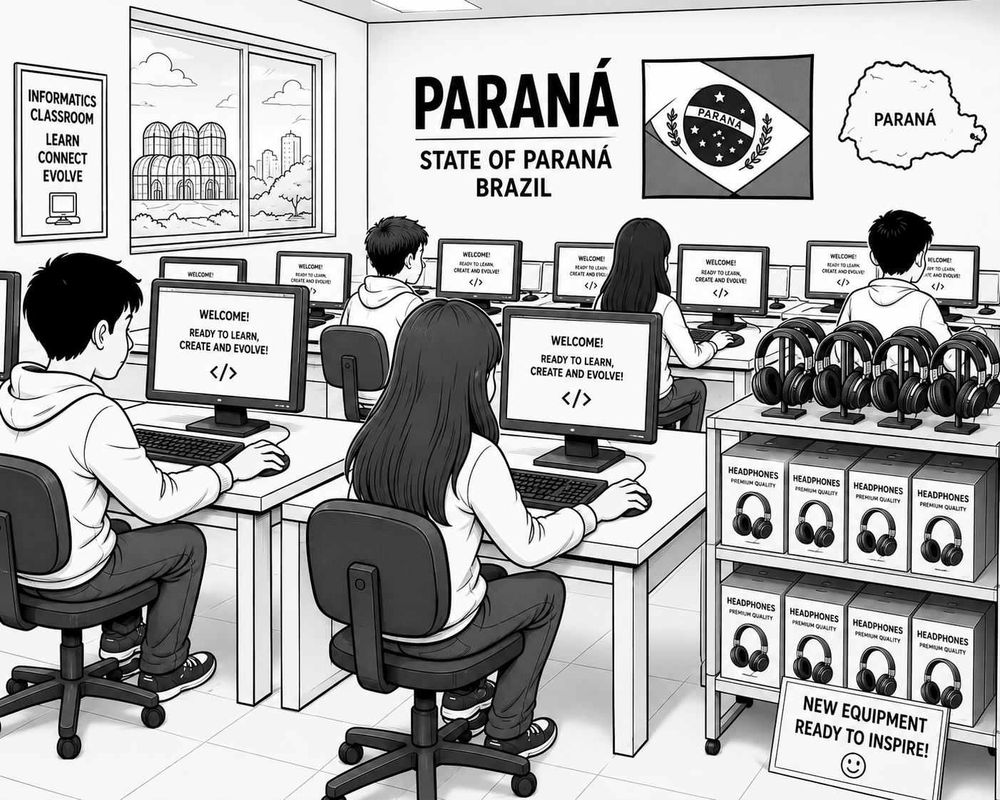
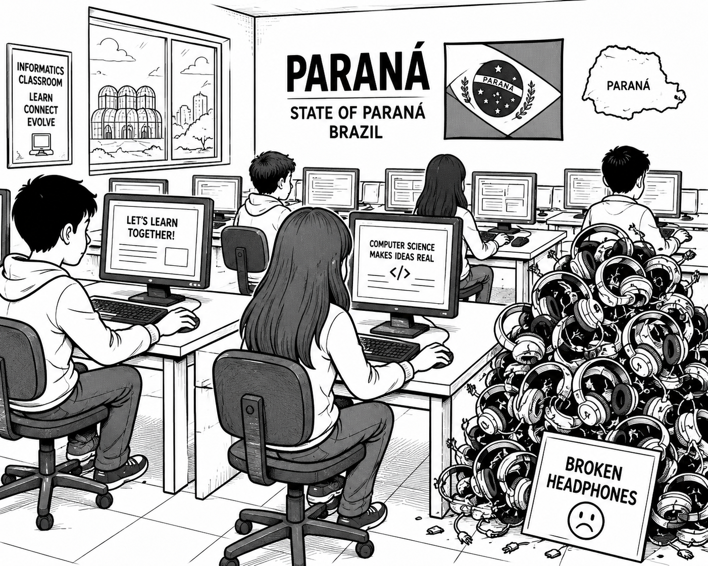
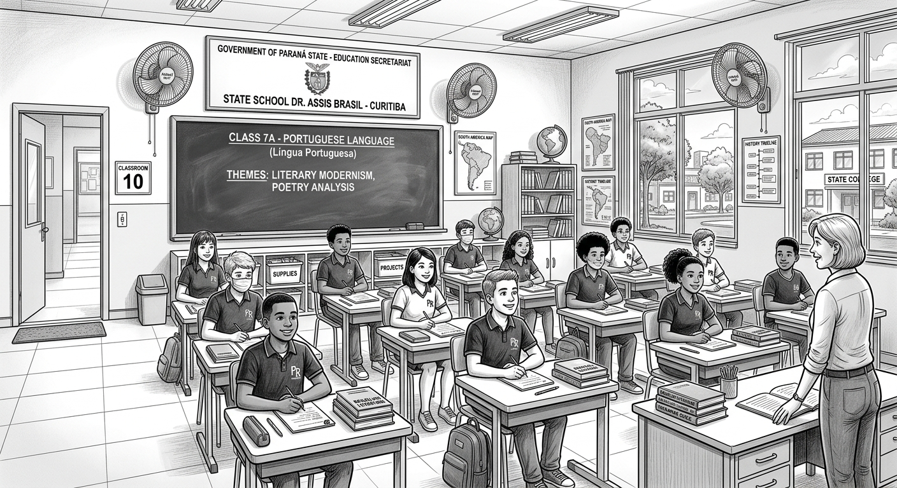
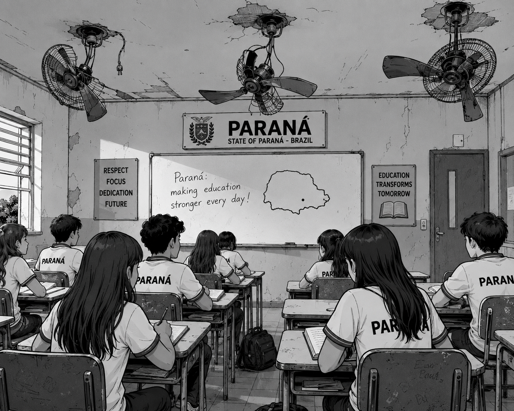
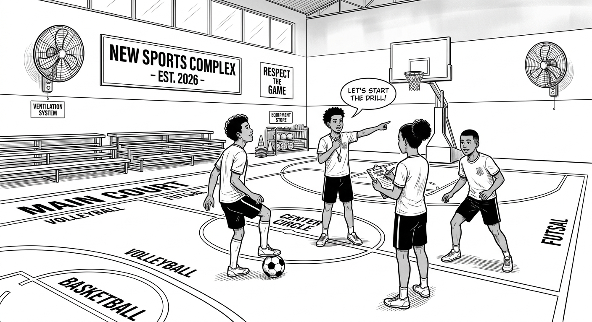
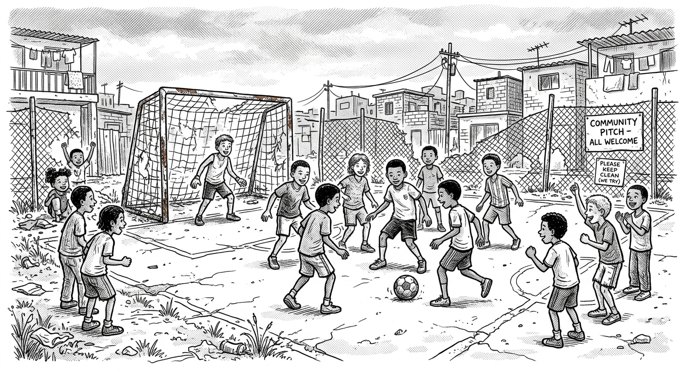

Comparativo e transformação dos espaços educativos no Estado do Paraná

O novo laboratório de informática oferece uma estrutura completa e moderna para o aprendizado digital dos alunos:

Visão dos desafios enfrentados na gestão de recursos e manutenção de equipamentos tecnológicos:

Ambiente escolar moderno na Escola Estadual Dr. Assis Brasil (Curitiba):

Registro do espaço físico escolar demandando reformas de infraestrutura:

Quadra poliesportiva coberta e totalmente equipada para diversas modalidades:

Espaço de lazer e prática esportiva improvisado pela comunidade local: